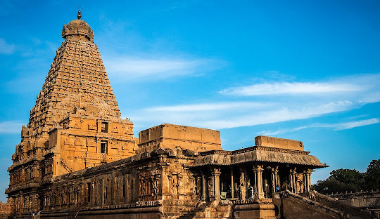
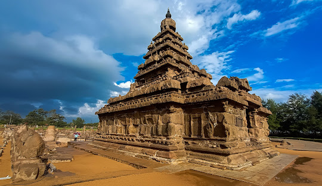

Guided City Tours
Explore the best cities in Tamil Nadu with our expert guides
Chennai City Tour
Discover the vibrant city of Chennai, known for its rich history, bustling streets, and beautiful beaches. This tour covers Marina Beach, Fort St. George, Kapaleeshwarar Temple, and the famous Chennai Museum. Experience the cultural and historical essence of Chennai with our expert guides.
Book Now